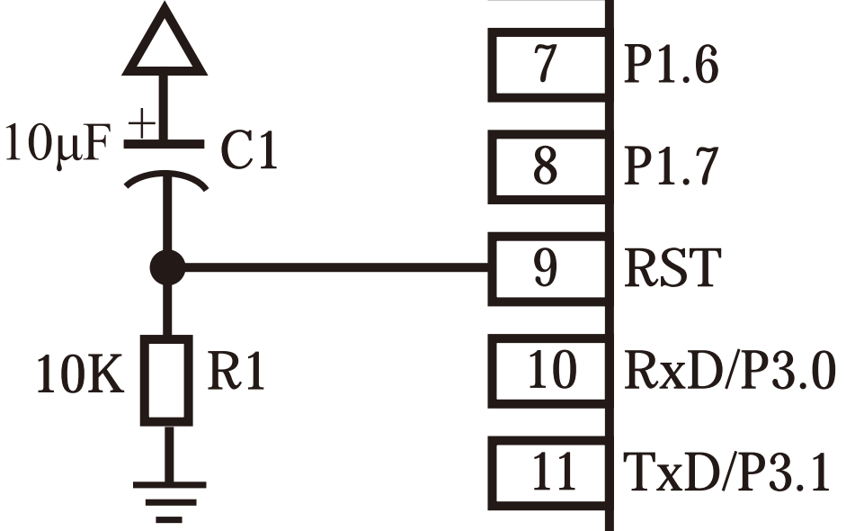

由于博主还未学习数字电路和计算机组成原理，因此本系列先开展单片机软件编程的内容，硬件结构的内容简单带过，会考虑安排在后续学习计划中，编程入门部分不会深入涉及单片机电路结构原理。博主已有C语言基础，因此相关内容不会从零开始赘述
主要参考学习资料：B站【普中官方】51单片机手把手教学视频
前置知识：C语言
单片机套装：普中STC51单片机开发板A4标准版套餐7
单片机介绍
单片机（Micro Controller Unit），简称MCU
内部集成了CPU、RAM、ROM、定时器、中断系统、通讯接口等一系列电脑常用硬件功能
单片机的任务是信息采集（依靠传感器）、处理（依靠CPU）和硬件设备（例如电机、LED等）的控制
跟计算机相比，单片机是一个袖珍版计算机，一个芯片就能构成完整的计算机系统，但在性能上与计算机相差甚远，但单片机成本低、体积小、结构简单，在生活和工业控制领域大有所用的同时，学习使用单片机也是了解计算机原理与结构的最佳选择
51单片机是对所有兼容Intel 8051指令系统的单片机的统称
STC89C52系列内部结构框图
STC89C52系列PDIP封装管脚图
51单片机最小系统
能使51单片机工作的最简单最基础的电路统称为51单片机最小系统，由晶振电路、复位电路、电源电路构成，而要为单片机烧录程序还需要下载电路
晶振电路
晶振电路为单片机正常工作提供一个时钟
51单片机的时钟频率在0~40MHz运行，通常选用12MHz（便于计算时间）或11.059MHz（串行通信波特率为零）的晶振接在管脚18、19
旁路电容作用：消除晶振接入电路一瞬间产生的电感干扰，一端接地，电容大小取决于晶振大小
复位电路
复位电路提供系统复位的操作，当系统工作不正常或死机时可以重启系统

复位的两种方式：手动按键复位（上图）和接通电源自动复位（下图）
STC89C51单片机为高电平复位，只要让引脚保持一段时间的高电平即可复位
电源电路
单片机电压过大会烧毁电路，电压过小系统会运行不起来，因此需要挑选合适的电源电路
下载电路

下载电路将编译文件下载到单片机
C语言C51扩充内容
C51扩充数据类型
| 类型 |
长度 |
值域 |
说明 |
| bit |
位 |
0或1 |
位变量声明 |
| sbit |
位 |
0或1 |
特殊功能位声明 |
| sfr |
8位=1字节 |
0~255 |
特殊功能寄存器声明 |
| sfr16 |
16位=2字节 |
0~65535 |
sfr的16位数据声明 |
| * |
1~3字节 |
|
对象的地址 |
例：
1
2
3
4
|
sfr SCON = 0x98;
//使用SCON控制单片机上地址为0x98的寄存器
sbit TI = SCON^1;
//使用TI控制八位寄存器SCON位0~7中的位1
|
reg52头文件
reg52头文件定义了51单片机特殊功能寄存器和特殊功能位的名字以便我们访问
1
2
3
|
#include <reg52.h>//直接在安装目录下寻找头文件
#include "reg52.h"//先在工程目录下寻找头文件，再到安装目录
//右键头文件可打开头文件内容
|
头文件内容（了解如何定义即可）
1
2
3
4
5
6
7
8
9
10
11
12
13
14
15
16
17
18
19
20
21
22
23
24
25
26
27
28
29
30
31
32
33
34
35
36
37
38
39
40
41
42
43
44
45
46
47
48
49
50
51
52
53
54
55
56
57
58
59
60
61
62
63
64
65
66
67
68
69
70
71
72
73
74
75
76
77
78
79
80
81
82
83
84
85
86
87
88
89
90
91
92
93
94
95
96
97
98
99
100
101
102
103
104
105
106
107
108
109
110
111
112
113
114
|
/*--------------------------------------------------------------------------
REG52.H
Header file for generic 80C52 and 80C32 microcontroller.
Copyright (c) 1988-2002 Keil Elektronik GmbH and Keil Software, Inc.
All rights reserved.
--------------------------------------------------------------------------*/
#ifndef __REG52_H__
#define __REG52_H__
/* BYTE Registers */
sfr P0 = 0x80;
sfr P1 = 0x90;
sfr P2 = 0xA0;
sfr P3 = 0xB0;
sfr PSW = 0xD0;
sfr ACC = 0xE0;
sfr B = 0xF0;
sfr SP = 0x81;
sfr DPL = 0x82;
sfr DPH = 0x83;
sfr PCON = 0x87;
sfr TCON = 0x88;
sfr TMOD = 0x89;
sfr TL0 = 0x8A;
sfr TL1 = 0x8B;
sfr TH0 = 0x8C;
sfr TH1 = 0x8D;
sfr IE = 0xA8;
sfr IP = 0xB8;
sfr SCON = 0x98;
sfr SBUF = 0x99;
/* 8052 Extensions */
sfr T2CON = 0xC8;
sfr RCAP2L = 0xCA;
sfr RCAP2H = 0xCB;
sfr TL2 = 0xCC;
sfr TH2 = 0xCD;
/* BIT Registers */
/* PSW */
sbit CY = PSW^7;
sbit AC = PSW^6;
sbit F0 = PSW^5;
sbit RS1 = PSW^4;
sbit RS0 = PSW^3;
sbit OV = PSW^2;
sbit P = PSW^0; //8052 only
/* TCON */
sbit TF1 = TCON^7;
sbit TR1 = TCON^6;
sbit TF0 = TCON^5;
sbit TR0 = TCON^4;
sbit IE1 = TCON^3;
sbit IT1 = TCON^2;
sbit IE0 = TCON^1;
sbit IT0 = TCON^0;
/* IE */
sbit EA = IE^7;
sbit ET2 = IE^5; //8052 only
sbit ES = IE^4;
sbit ET1 = IE^3;
sbit EX1 = IE^2;
sbit ET0 = IE^1;
sbit EX0 = IE^0;
/* IP */
sbit PT2 = IP^5;
sbit PS = IP^4;
sbit PT1 = IP^3;
sbit PX1 = IP^2;
sbit PT0 = IP^1;
sbit PX0 = IP^0;
/* P3 */
sbit RD = P3^7;
sbit WR = P3^6;
sbit T1 = P3^5;
sbit T0 = P3^4;
sbit INT1 = P3^3;
sbit INT0 = P3^2;
sbit TXD = P3^1;
sbit RXD = P3^0;
/* SCON */
sbit SM0 = SCON^7;
sbit SM1 = SCON^6;
sbit SM2 = SCON^5;
sbit REN = SCON^4;
sbit TB8 = SCON^3;
sbit RB8 = SCON^2;
sbit TI = SCON^1;
sbit RI = SCON^0;
/* P1 */
sbit T2EX = P1^1; // 8052 only
sbit T2 = P1^0; // 8052 only
/* T2CON */
sbit TF2 = T2CON^7;
sbit EXF2 = T2CON^6;
sbit RCLK = T2CON^5;
sbit TCLK = T2CON^4;
sbit EXEN2 = T2CON^3;
sbit TR2 = T2CON^2;
sbit C_T2 = T2CON^1;
sbit CP_RL2 = T2CON^0;
#endif
|
点亮第一个LED
C51单片机GPIO介绍及LED线路
**GPIO（General Purpose Input Output）**是通用输入输出端口的简称，可以通过软件来控制其输入和输出
51单片机引脚分类：
- 电源引脚（Vcc/Vdd/Gnd/Vss）
- 晶振引脚（XTAL）
- 复位引脚（RST/Reset）
- 下载引脚（P3.0/P3.1）
- GPIO引脚（P0~P3）
详细管脚功能可在单片机手册中查询
LED线路图
程序1：点亮D1指示灯
1
2
3
4
5
6
7
|
#include "reg52.h"
sbit LED1 = P2^0;//将控制D1灯的P2管脚第0位命名为LED1
void main()
{
LED1 = 0;//设置LED1为低电平，LED低电平0点亮，高电平1熄灭
}
|
效果图
程序2：控制D1指示灯闪烁
1
2
3
4
5
6
7
8
9
10
11
12
13
14
15
16
17
18
19
20
21
22
|
#include "reg52.h"
typedef unsigned int u16;
sbit LED1 = P2^0;
void delay_10us(u16 time)//定义延时函数
{
while(time --);
//单次while循环时间约为10微秒，后续讲到定时器可以准确计时
}
void main()
{
while(1)
{
LED1 = 0;//点亮D1灯
delay_10us(50000);//延时约488毫秒
LED1 = 1;//熄灭D1灯
delay_10us(50000);
}
}
|
程序3：LED流水灯
1
2
3
4
5
6
7
8
9
10
11
12
13
14
15
16
17
18
19
20
21
22
23
|
#include "reg52.h"
#define LED_PORT P2//使用宏定义将P2端口定义
typedef unsigned char u8;
typedef unsigned int u16;
void delay_10us(u16 time)
{
while(time --);
}
void main()
{
u8 i = 0;//循环控制变量
while(1)
{
for(i = 0;i < 8;i++)
{
LED_PORT = ~(0x01 << i);//见下文解读
delay_10us(50000);
}
}
}
|
LED_PORT用八位二进制数上的每一位分别控制八个LED灯的电平，要实现流水灯，其值应当这样变化：11111110→11111101→11111011→……
不难想到可以通过左移运算符让二进制数的数位整体左移，但是二进制数左移后最右侧会补零而不是补一，因此采用对00000001左移再按位取反的方法
代码中0x01采用十六进制是为了简洁
额外介绍一个使用intrins头文件中左移右移的方法
1
2
3
4
5
6
7
8
9
10
11
12
13
14
15
16
17
18
19
20
21
22
23
24
25
26
27
28
29
30
31
|
#include "reg52.h"
#include "intrins.h"
#define LED_PORT P2
typedef unsigned char u8;
typedef unsigned int u16;
void delay_10us(u16 time)
{
while(time --);
}
void main()
{
u8 i = 0;
LED_PORT =~ 0x01;
while(1)
{
for(i = 0;i < 7;i++)
{
LED_PORT = _crol_(LED_PORT,1);
//对LED_PORT左移1位，并将左侧移出去的数位补到右侧，即11111110→11111101
delay_10us(50000);
}
for(i = 0;i < 7;i++)
{
LED_PORT = _cror_(LED_PORT,1);//右移同理
delay_10us(50000);
}
}
}
|
该程序进一步实现流水灯从左到右再从右到左来回闪烁的效果
本章完